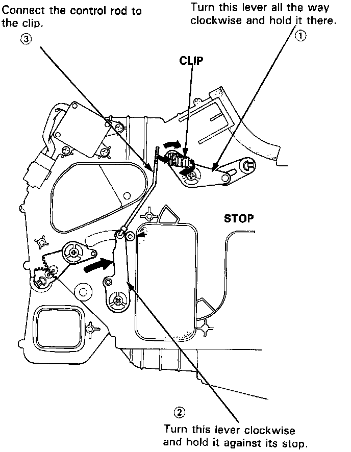

Operation CHARM
: Car repair manuals for everyone.
Home
>>
Acura
>>
1994
>>
NSX V6-3.0L DOHC
>>
Repair and Diagnosis
>>
Heating and Air Conditioning
>>
Evaporator Case
>>
Adjustments
>>
Def Door Adjustment
Def Door Adjustment
"DEF" Door Adjustment
